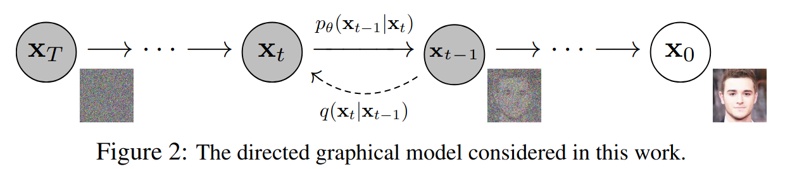
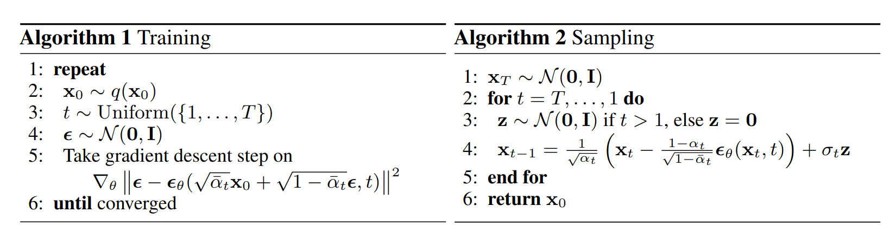

What?
A diffusion probabilistic model is a parameterized Markov chain that gradually adds noise to the data and then learn to reverse the diffusion process to generate data samples from noise.

Why?
Compared with other AI tasks, image generation is harder, since it does not have a standard answer. To solve this issue, GAN and VAE are propsed.
-
GAN uses another model (discriminator) to decide the quality of generated images.
-
VAE learns how to compress an image into a latent vector $z$ and then learns how to reconstruct the image from $z$. Then for each generated image, there exists a standard answer.GAN is able to generate images with good quality, but its training is unstable. Is there a model that is as powerful as GAN but simpler for training?
How?
Forward process
Given a data point sampled from a real data distribution $x_0\sim q(x)$, the forward process is defined by
$$ q(x_t|x_{t-1}) = \mathcal{N}(x_t; \sqrt{1-\beta_t}x_{t-1}, \beta_t I),\quad q(x_{1:T}|x_0) = \prod_{t=1}^T q(x_t|x_{t-1}). $$A nice property of the forward process is that it admits sampling $x_t$ at an arbitrary timestep $t$ in closed form:
$$ \begin{equation} q(x_t|x_0) = \mathcal{N}(x_t; \sqrt{\bar{\alpha}_t} x_0, (1-\bar{\alpha}_{t})I), \end{equation} $$where $\alpha_t := 1-\beta_t$ and $\bar{\alpha}_t:= \prod_{s=0}^t \alpha_s$. To make sure that $q(x_t|x_0)$ is convergent, we need $\bar{\alpha}_t \to C$ as $t\to\infty$. It can be guaranteed by setting $\beta_t\in (0,1)$ as an increasing sequence and therefore $\bar{\alpha}_1>\cdots>\bar{\alpha}_T$.
Reverse process
If we can reverse the above process and sample from $q(x_{t-1}|x_t)$, we will be able to recreate the true sample from a Gaussian noise input $x_T\sim N(0, I)$. Note that if $\beta_t$ is small enough, $q(x_{t-1}|x_t)$ will also be Gaussian (==We will prove it in Diffusion-model-3==). However, we cannot easily estimate $q(x_{x-1}|x_t)$ because it needs to use the entire dataset. So we try to estimate it through a model $p_\theta(x_{t-1}|x_t)$. We set
$$ p_\theta(x_{t-1}|x_t) = \mathcal{N}(x_{t-1}; \mu_\theta(x_t, t), \Sigma_\theta(x_t, t));\quad p_\theta(x_{0:T}) = p(x_T)\prod_{t=1}^T p_\theta(x_{t-1}|x_t). $$But how to define the loss function? Fitting the mean and variance of added noise from the step $q(x_{t-1}|x_t)$ is unrealistic.
Conditional posterior
It is noteworthy that the reverse conditional probability is tractable when conditioned on $x_0$:
$$ q(x_{t-1}|x_t, x_0) = \mathcal{N}(x_{t-1}; \tilde{\mu}_t(x_t, x_0), \tilde{\beta}_t I), $$where
$$ \begin{equation} \tilde{\mu}_t(x_t, x_0) := \frac{\sqrt{\alpha_t}(1-\bar{\alpha}_{t-1})}{1-\bar{\alpha}_t}x_t +\frac{\bar{\alpha}_{t-1}\beta_t}{1-\bar{\alpha}_t}x_0;\quad \tilde{\beta}_t:= \frac{1-\bar{\alpha}_{t-1}}{1-\bar{\alpha}_t}\beta_t. \end{equation} $$See proof in supplementary section.
Loss function
Then we can use the variational lower bound to optimize the negative log-likehood.
$$ \begin{aligned} -\log p_{\theta}(x_{0}) &\leq -\log p_{\theta}(x_{0}) + D_{KL}(q(x_{1:T}|x_{0})\|p_{\theta}(x_{1:T}|x_{0})) \\ &= -\log p_{\theta}(x_{0}) + \mathbb{E}_{q}\left[ \log \frac{q(x_{1:T}|x_{0})}{p_{\theta}(x_{0:T})/p_{\theta}(x_{0})} \right]\\ &=-\log p_{\theta}(x_{0}) + \mathbb{E}_{q}\left[ \log \frac{q(x_{1:T}|x_{0})}{p_{\theta}(x_{0:T})} +\log p_{\theta}(x_{0}) \right]\\ &=\mathbb{E}_{q}\left[ \log \frac{q(x_{1:T}|x_{0})}{p_{\theta}(x_{0:T})} \right] := L_{VLB} \end{aligned} $$Then we rewrite $L_{VLB}$ in terms of $q(x_{t-1}|x_{t},x_{0})$:
$$ \begin{align} L_{VLB} &= L_{T} + L_{T-1} + \cdots + L_{0}, \\ \text{where} \; L_{T} & = D_{KL}(q(x_{T}|x_{0})\|p_{\theta}(x_{T})), \\ L_{t} & = D_{KL}(q(x_{t}|x_{t+1},x_{0})\| p_{\theta}(x_{t}|x_{t+1})),\; 1\leq t\leq T-1, \\ L_{0} & = -\log p_{\theta}(x_{0}|x_{1}). \end{align} $$See proof in supplementary section. $L_{T}$ is constant because $x_{T}$ is a Gaussian noise. $L_{0}$ is modeled using a separate decoder. $L_{t}$ compares two Gaussian distributions and therefore can be computed in closed form.
Simplification of $L_{t}$
It is known that the KL divergence between two Gaussian distributions $\mathcal{N}(\mu_{p}, \Sigma_{p})$ and $\mathcal{N}(\mu_{q},\Sigma_{q})$ is
$$ D_{KL}(p\|q) = \frac{1}{2} \left[ \log \frac{|\Sigma_{q}|}{|\Sigma_{p}|} + (\mu_{p} -\mu_{q})^T \Sigma_{q}^{-1}(\mu_{q} - \mu_{p}) + Tr(\Sigma_{q}^{-1}\Sigma_{p}) \right] + C. $$Since the authors set $\Sigma_{\theta}(x_{t}, t) = \sigma_{t}^2 I$, where $\sigma_{t}$ is not learnable. We can simplify $L_{t}$ as
$$ \begin{equation} L_{t} = \frac{1}{2\|\Sigma_{\theta}(x_{t},t)\|_{2}^2} \|\tilde{\mu}(x_{t},x_{0}) - \mu_{\theta}(x_{t},t)\|^2 + C. \end{equation} $$We can expand the above loss by reparameterizing $q(x_t|x_0) = \mathcal{N}(x_t; \sqrt{\bar{\alpha}_t} x_0, (1-\bar{\alpha})I)$ as $x_{t}(x_{0}, \epsilon) = \sqrt{ \bar{\alpha}_{t} }x_{0} + \sqrt{ 1-\bar{\alpha}_{t} }\epsilon$ for $\epsilon\sim\mathcal{N}(0, I)$:
$$ \begin{aligned} \tilde{\mu}_{t} &= \frac{\sqrt{\alpha_t}(1-\bar{\alpha}_{t-1})}{1-\bar{\alpha}_t}x_t +\frac{\bar{\alpha}_{t-1}\beta_t}{1-\bar{\alpha}_t}{\color{green}x_0} \\ &=\frac{\sqrt{\alpha_t}(1-\bar{\alpha}_{t-1})}{1-\bar{\alpha}_t}x_t +\frac{\bar{\alpha}_{t-1}\beta_t}{1-\bar{\alpha}_t} {\color{green} \frac{1}{\sqrt{ \bar{\alpha}_{t} }}(x_{t} - \sqrt{ 1-\bar{\alpha}_{t} }\epsilon)} \\ &=\frac{1}{\sqrt{ \alpha_{t} }}\left( x_{t} - \frac{1-\alpha_{t}}{\sqrt{ 1-\bar{\alpha}_{t} }} \epsilon \right) \end{aligned} $$Instead of approximating $\tilde{\mu}_{t}$ by $\mu_{\theta}$ directly, we can also estimate the noise $\epsilon$ using $\epsilon_{\theta}(x_{t}, t)$ (like ResNet) by setting
$$ \begin{align} \mu_{\theta}(x_{t}, t) = \tilde{\mu}_{t}(x_{t}, t) &= \frac{1}{\sqrt{ \alpha_{t} }}\left( x_{t} - \frac{1-\alpha_{t}}{\sqrt{ 1-\bar{\alpha}_{t} }} \epsilon_{\theta}(x_{t}, t) \right).\\ \end{align} $$Therefore, we can rewrite the loss function $L_{t}$ as
$$ \begin{align} L_{t} &= \mathbb{E}_{x_{0}, \epsilon} \left[\frac{(1-\alpha_{t})^2}{2 \alpha_{t}(1-\bar{\alpha}_{t})\|\Sigma_{\theta}(x_{t},t)\|_{2}^2} \| \epsilon - \epsilon_{\theta}(x_{t},t)\|^2 \right] + C \\ & = \mathbb{E}_{x_{0}, \epsilon} \left[\frac{(1-\alpha_{t})^2}{2 \alpha_{t}(1-\bar{\alpha}_{t})\|\Sigma_{\theta}(x_{t},t)\|_{2}^2} \| \epsilon - \epsilon_{\theta}({\color{green}\sqrt{ \bar{\alpha}_{t} }x_{0} + \sqrt{ 1-\bar{\alpha}_{t} }\epsilon},t)\|^2 \right] + C \end{align} $$Algorithm
Empirically, the authors found that training the diffusion model works better with a simplified objective that ignores the weighting term:
$$ L_{t}^{simple} = \mathbb{E}_{x_{0}, \epsilon} \left[\| \epsilon - \epsilon_{\theta}(\sqrt{ \bar{\alpha}_{t} }x_{0} + \sqrt{ 1-\bar{\alpha}_{t} }\epsilon,t)\|^2 \right]. $$
Supplementary
Langevin dynamics
Langevin dynamics is a concept from physics, developed for statistically modeling molecular systems. Combined with stochastic gradient descent, stochastic gradient Langevin dynamics can produce samples from a probability distribution $p(x)$ using only gradients $\nabla_{x} \log p(x)$ in a Markov chain of updates:
$$ x_{t} = x_{t-1} + \frac{\delta}{2}\nabla_{x} \log p(x_{t-1}) + \sqrt{ \delta }\epsilon_{t},\quad \epsilon_{t}\sim \mathcal{N}(0,I), $$where $\delta$ is the step size. When $T\to \infty$, $\epsilon\to 0$, $x_{T}\sim p(x)$.
We can see that we only need to know the gradients $\nabla_{x} \log p(x)$ (score function) to sample data from $p(x)$.
Let $(x, \tilde{x})$ be a pair of clean and corrupted data. The idea of denoising score matching is to estimate the score function of the noise-corrupted data distribution $q_{\sigma}(\tilde{x})$, and the objective is shown to be equivalent to
$$ \mathbb{E}_{q_{\sigma}(\tilde{x}|x) p(x)} [\|s(\tilde{x}, \theta) - \nabla_{x}\log q_{\sigma}(\tilde{x}|x)\|_{2}^2]. $$The schedule of increasing noise levels resembles the forward diffusion process $q(x_{t}|x_{0})$. If we use the diffusion process annotation, the score approximates $s_{\theta}(x_{t}, t)\approx \nabla_{x_{t}}q(x_{t}|x_{0})$. Note that given a Gaussian distribution $x\sim\mathcal{N}(\mu,\sigma^2I)$, its score function is
$$ \nabla_{x} \log p(x) = - \frac{x-\mu}{\sigma^2} = - \frac{\epsilon}{\sigma}, \quad \epsilon\sim \mathcal{N}(0,I). $$Recall that $q(x_{t}|x_{0})\sim \mathcal{N}(x_t; \sqrt{\bar{\alpha}_t} x_0, (1-\bar{\alpha})I)$ and therefore,
$$ s_{\theta}(x_{t},t) \approx \nabla_{x_{t}}\log q(x_{t}) = \mathbb{E}_{q(x_{0})}[\nabla_{x_{t}}q(x_{t}|x_{0})] = - \frac{\epsilon}{\sqrt{ 1-\bar{\alpha}_{t} }}, $$which is equivalent to the loss function $L_{t}$ in DDPM.
Proof of conditional posterior $p(x_{t-1}|x_t,x_0)$
Using Bayes’ rule, we have
$$ \begin{aligned} q(x_{t-1}|x_{t}, x_{0}) &= q(x_{t}|x_{t}, x_{0}) \frac{q(x_{t-1}|x_{0})}{q(x_{t}|x_{0})} \\ & \propto \exp\left( -\frac{1}{2}\left( \frac{(x_{t}- \sqrt{ \alpha_{t} }x_{t-1})^2}{\beta_{t}} + \frac{(x_{t-1}- \sqrt{ \bar{\alpha}_{t-1} }x_{0})^2}{1-\bar{\alpha}_{t-1}} - \frac{(x_{t}- \sqrt{ \bar{\alpha}_{t} }x_{0})^2}{1-\bar{\alpha}_{t}} \right) \right) \\ & \propto \exp\left( -\frac{1}{2}\left( \frac{- 2\sqrt{ \alpha_{t}} x_{t}{\color{blue}x_{t-1}} + \alpha_{t} \color{red}x_{t-1}^2}{\beta_{t}} + \frac{ {\color{red}x_{t-1}^2}- 2\sqrt{ \bar{\alpha}_{t-1} }x_{0}{\color{blue}{x_{t-1}}} }{1-\bar{\alpha}_{t-1}} \right) \right) \\ & \exp\left( -\frac{1}{2} \left( {\color{red} \left( \frac{\alpha_{t}}{\beta_{t}} + \frac{1}{1-\bar{\alpha}_{t-1}} \right)x_{t-1}^2} - {\color{blue}\left( \frac{2\sqrt{ \alpha_{t} }}{\beta_{t}} x_{t} + \frac{2\sqrt{\bar{\alpha}_{t-1}}}{1-\bar{\alpha}_{t-1}} \right) x_{t-1}} \right) \right) \end{aligned} $$By completing the square, we have
$$ \begin{aligned} \tilde{\beta}_{t} &= \frac{1}{\left( \frac{\alpha_{t}}{\beta_{t}} + \frac{1}{1-\bar{\alpha}_{t-1}} \right)} = \frac{1-\bar{\alpha}_{t-1}}{1-\bar{\alpha}_{t}}\beta_{t}, \\ \tilde{\mu}_{t} &= \left( \frac{2\sqrt{ \alpha_{t} }}{\beta_{t}} x_{t} + \frac{2\sqrt{\bar{\alpha}_{t-1}}}{1-\bar{\alpha}_{t-1}} \right) / \tilde{\beta}_{t} = \frac{\sqrt{\alpha_t}(1-\bar{\alpha}_{t-1})}{1-\bar{\alpha}_t}x_t +\frac{\bar{\alpha}_{t-1}\beta_t}{1-\bar{\alpha}_t}x_0. \end{aligned} $$